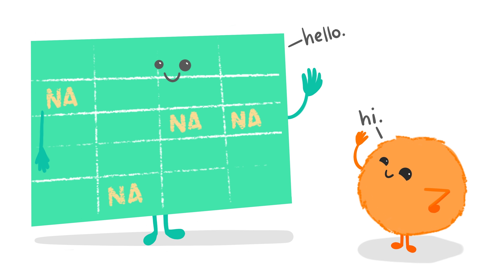
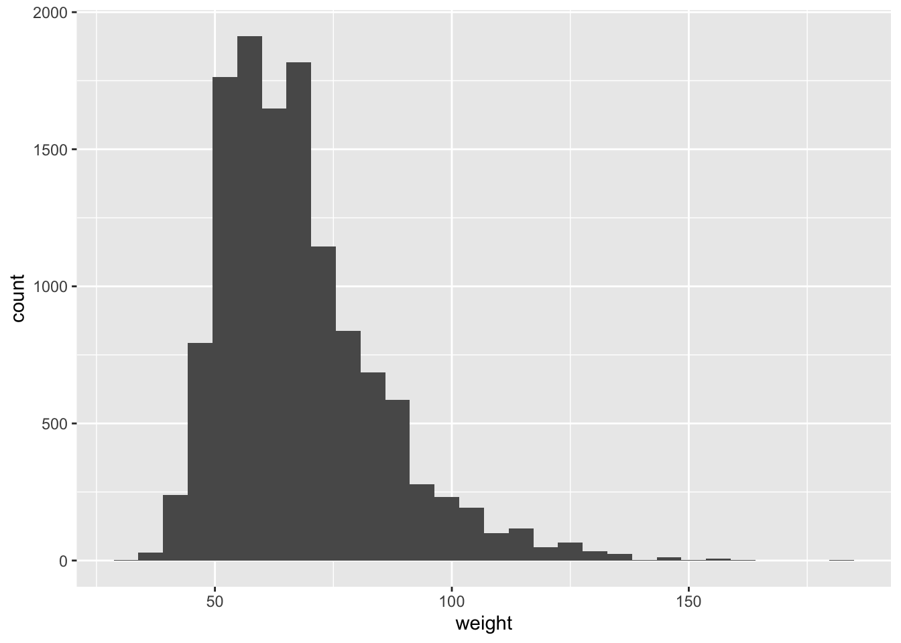
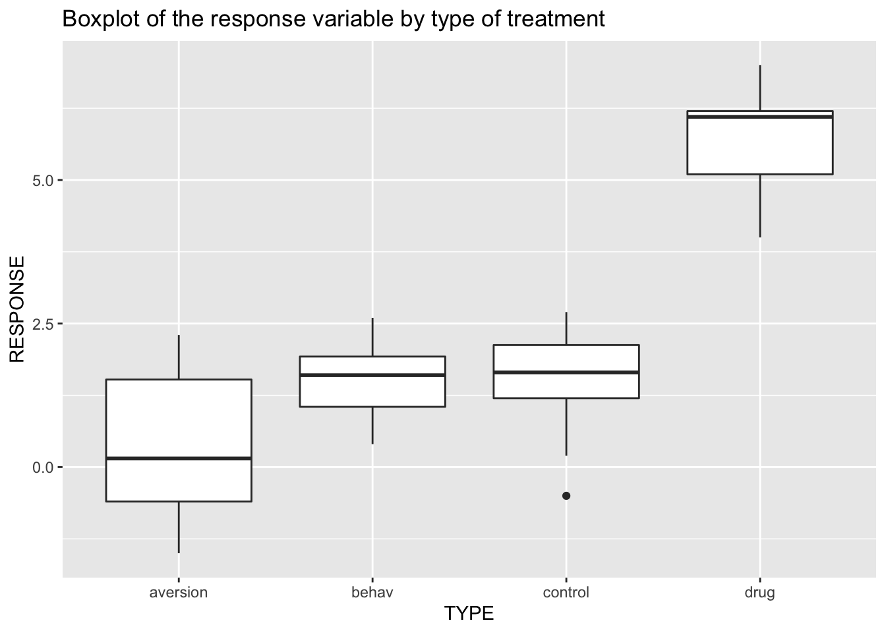

Inference for Numerical Data

Using the data from the YRBSS survey, we will now analyze the weight of the students in kilograms, stored in the weight variable in the YRBSS data frame. Please note that for the next section our data set is called YRBSS, the capital letters are important, we will go back to yrbss afterwards though
We can obtain the summary statistics of the variable by running the following code:
summary(YRBSS$weight)To visualise the distribution of the weights, you may want to produce a box-plot for the weight variable by running the following code:
ggplot(data = YRBSS, mapping = aes(y = weight)) +
geom_boxplot()Exercise 1
Another way of visualising the distribution of a variable is to look at the histogram of the data. Write code to produce a histogram for the weight variable.
We want to use the function ggplot(), specifying the data argument and the variable to go along the \(x\)-axis. Use geom_histogram() to produce a histogram.
ggplot(data = YRBSS, aes(x = weight)) +
geom_histogram()## `stat_bin()` using `bins = 30`. Pick better value with `binwidth`.
Look carefully at the shape of the graph, particularly towards the right.
To find how many observations we are missing from the weight variable you can run the following R code:
sum(is.na(YRBSS$weight))The is.na() function creates a vector that corresponds to the variable provided, (weight in this instance, from our dataset YRBSS) with TRUE for a missing value and FALSE for a non-missing value. The sum() function then adds up the elements in this created vector such that TRUE is equivalent to 1 and FALSE is equivalent to 0 and hence the sum of this vector is equivalent to the number of TRUE entries which calculates how many of these "NA" values there are.
How many observations are we missing heights from? You will find the previous example useful.
Use the function sum(is.na(YRBSS$...)).
Please note that for the remaining sections our data set is called yrbss again
Next, consider the possible relationship between a high schooler's weight and their physical activity. Plotting the data is a useful first step because it helps us quickly visualise trends, identify strong associations and develop research questions.
First, we will create a new variable physical_3plus, which will be coded as either "yes" if they are physically active for at least 3 days a week, and "no" if not, using the mutate() function.
yrbss <- yrbss %>%
mutate(physical_3plus = ifelse(yrbss$physically_active_7d > 2, "yes", "no"))Look at the code below that creates a boxplot. If you wanted to add another dimension to the boxplot, say, splitting it by some other variable, you would want to add an x = argument inside the aes bracket, making sure there's a comma between it and the y = weight part. Some variable name would follow the x =.
ggplot(data = yrbss, mapping = aes(y = weight)) +
geom_boxplot()Exercise 2
Make a side-by-side boxplot of physical_3plus and weight i.e. a boxplot with the physical_3plus variable on the x axis and the weight variable on the y axis. This will show side by side the boxplots of weights, comparing between the yes and no for physical_3plus.
With the aes() argument you want to specify that x = physical_3plus.
ggplot(data = yrbss, aes(x = physical_3plus, y = weight)) +
geom_boxplot()
This is just an initial impression, so we don't decide anything for certain yet until we've done some analysis.
The box plots show how the medians of the two distributions compare, but we can also compare the means of the distributions using the same procedure that we used back in Exercise 1, except our summary this time is a mean rather than a count. Run the code below to see the mean weights of the students, separated by "yes" they are physically active 3+ days a week or "no" they aren't.
yrbss %>%
group_by(physical_3plus) %>%
summarise(mean_weight = mean(weight, na.rm = TRUE))There is an observed difference, but is this difference statistically significant? In order to answer this question we will conduct a hypothesis test.